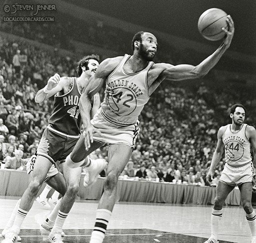
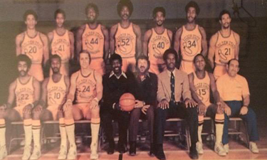
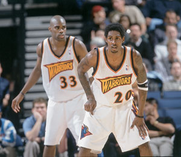

Warriorsi so bili ustanovljeni leta 1946 kot Philadelphia Warriors, član Košarkarske zveze Amerike. Pod vodstvom Joeja Fulksa, je v sezoni 1946–47 v ligi osvojil prvenstvo z zmago v Chicagu Stags, štiri tekme proti eni. Warriorsi so v sezoni 1955–56 osvojili svoje naslednje prvenstvo v Filadelfiji in s štirimi tekmami na eno premagali Fort Wayne Pistons.
Leta 1959 je ekipa podpisala osnutek izbire Wilt Chamberlain. Znan kot "Wilt the Stilt" je šestkrat vodil ekipo, hitro začel rušiti rekorde NBA in za vedno spremenil slog igre NBA. 2. marca 1962 je v "domači" igri Warriorja, igranem na nevtralnem igrišču v Hersheyju v Pensilvaniji, Chamberlain dosegel 100 točk proti New York Knicks, kar je enodnevni rekord, ki ga je NBA uvrstila med svoje najboljše trenutke. Leta 1962 je Franklin Mieuli odkupil večinske deleže ekipe in franšizo prestavil na območje zaliva San Francisco ter jih preimenoval v San Francisco Warriors. Warriorsi so večino svojih domačih iger igrali v Kravji palači v Daly Cityju od leta 1962 do 1964 in v San Francisco Francisco Civic Auditorium od 1964 do 1966, čeprav so občasno igrali domače igre v bližini mestih, kot sta Oakland in San Jose. Warriorsi so v tej sezoni osvojili krono Western Division, a so leta 1964 izgubili finale lige NBA proti Boston Celticsu, štiri tekme proti ena. V sezoni 1964–65 so Warriorsi prenovili Chamberlaina v Philadelphijo 76ers za Connieja Dierkinga, Leeja Shafferja, Paula Neumanna in 150.000 dolarjev ter dobili samo 17 iger.
Zaradi izgube ključnih igralcev, kot so Barry, Wilkes in Thurmond, zaradi menjave in upokojevanja, so se Warriorsi borili za postavitev konkurenčne ekipe na igrišču od leta 1978 do 1987, potem ko je bila ena od prevladujočih ekip NBA v šestdesetih in večini 70-ih .Skozi osnutek lige NBA pa so pridobili nekaj igralcev, kot so visoki napadalec Purvis Short, nekdanji center Purdueja Joe Barry Carroll in center Robert Parish. Odhod nekaterih igralcev je iz različnih razlogov simboliziral neuporabnost franšize v tem obdobju, saj se je glavni trener Attles leta 1980 preselil na prednji urad kot generalni direktor, ekipa pa je naredila več trenerskih sprememb. Nova lastnika Jim Fitzgerald in Dan Finane sta končno uspela vrniti ekipo v spoštovanje z najemom nekdanjega glavnega trenerja Cleveland Cavaliersa Georgea Karla za glavnega trenerja.
Po podaljšku v pozih sedemdesetih in zgodnjih osemdesetih letih prejšnjega stoletja je ekipa pod trenerjem Karlom kratek odmevala ,vrhunec pa je bil v polfinalnem dvoboju zahodne konference leta 1987 proti Magic Johnsonu in Los Angeles Lakers. Warriorsi so se v letih 1993–94, ko je bil prvi izbrani osnutek in napadalec Rookie of the Year Chris Webber igral s stražarjem Latrellom Sprewellom, uvrstili v končnico. Sezona 1994–95 je bila prva pod novim lastnikom ekipe Chrisom Cohanom, ki je odkupil Fitzgerald in Finnane. Warriorsi so za svojega prvega skupnega izbora za osnutek leta 1995 izbrali Joeja Smitha in za novega glavnega trenerja najeli Rick Adelmana.
